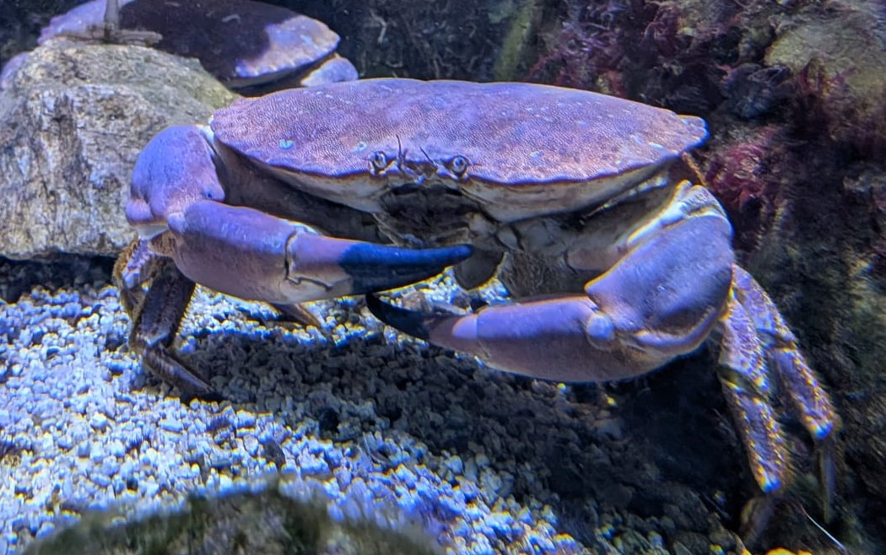

Crabe Dormeur (Tourteau)
Cancer pagurus
Le Tourteau (de son vrai nom Crabe Dormeur) est l'un des plus grands crabes des côtes européennes. Reconnaissable à sa carapace brun-orangé et à ses puissantes pinces noires, il vit principalement sur les fonds rocheux et sableux où il chasse la nuit.
Informations scientifiques
| Nom scientifique | Cancer pagurus |
|---|---|
| Nom commun | Crabe Dormeur (Tourteau) |
| Famille | Cancridae |
| Ordre | Decapoda |
| Classe | Malacostraca |
| Habitat | Fonds rocheux, sableux et graveleux. |
| Répartition | Atlantique Nord-Est, Manche et mer du Nord et Méditerranée. |
| Profondeur | De quelques mètres jusqu'à 200 m. |
| Largeur de carapace | Jusqu'à 30 cm. |
| Poids | Jusqu'à 3 kg. |
| Espérance de vie | Environ 20 à 30 ans. |
Description
Le Tourteau possède une carapace large, bombée et très robuste.
Ses pinces puissantes, terminées par des extrémités noires, lui permettent
de casser facilement les coquilles des mollusques et des oursins.
Principalement nocturne, il passe la journée caché entre les rochers ou
enfoui dans le sable. Son alimentation est composée de mollusques,
de crustacés, d'échinodermes et parfois de poissons morts.
Le Tourteau est une espèce très recherchée pour sa chair,
particulièrement en Europe occidentale. Sa pêche est réglementée dans
de nombreux pays afin de préserver les populations naturelles.